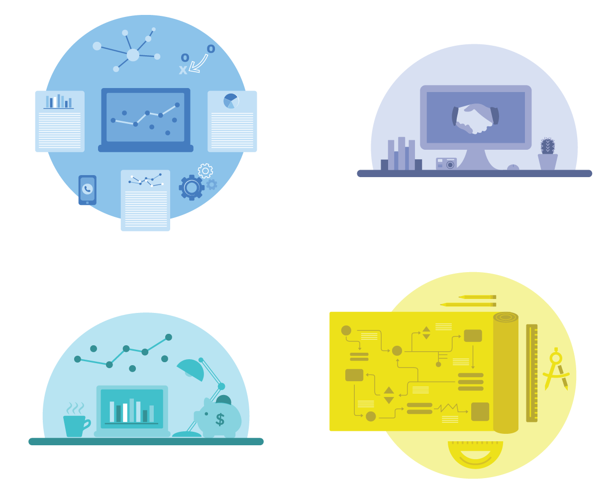

SPC Re-Design
Brief
Re-design the Schaaf-PartnerCentric site to drive more clicks from the two main visitors: People who want to start an affiliate program and people who have an existing affiliate program.
Scope
User Experience, Visual Design, & Illustration
Team
Morgan Simon, Sr Marketing

Re-Designing the way Your Clients See You
The company I worked for needed a website face-lift. The outdated website wasn't the only issue, however. The marketing team realized that there were two kinds of clients coming to the site: those that already had affiliate programs and those that didn't. It was up to us to present SPC as the go-to place for affiliate knowledge no matter the potential client's level of experience.
Objective: To create a website that showcases the programs that SPC has that addresses differing needs in the affiliate marketing space.
Solution: A color theory emerged that denoted each program and would help visitors identify which portal they were using.
Research & Development
I worked with SPC's senior marketer to determine that there are two groups of people that visit the site: people who already have an affiliate program, and people who don't and might not have a lot of information about affiliates. We made two personas from these groups. Instead of initially brainstorming content for the homepage, we thought about the menu buttons, then the rest of the links to important content we would want people to see. Using our personas, we determined that we wanted two different portals catered to the needs of the groups we wanted to serve. We wanted to highlight things we wanted them to explore, our different services, and calls to action.

COLOR THEORY
SPC colors are used when referencing the company as a whole, but each color coordinates with a specific program that is offered. Different hues and shades are used from there.


The colors were used in illustrations for each program to give them a seperate identity yet still cohesive with the Schaaf-PartnerCentric brand.
The Homepage
Taking the original button diagram, sections and content were created and put into a wireframe. The final was then created with additional icons and photos.
Personalization
When a user clicks on one of the "I already have an affiliate program" or the "I want to start an affiliate program" buttons on the homepage, they are taken to coordinating pages featuring guides to SPC's services.